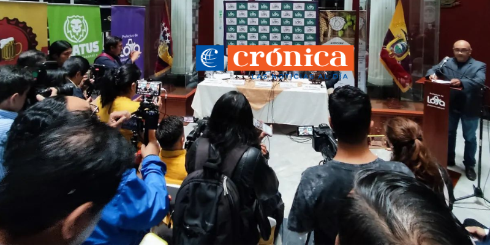

Nuevas frecuencias del espectro radioeléctrico se adjudicarán tras decreto; en Loja estaría lleno
El presidente Daniel Noboa, mediante el Decreto Ejecutivo N.º 421, ordenó reformar varios artículos e incisos del Reglamento General a la Ley Orgánica de Comunicación; entre los cambios consta una nueva adjudicación de frecuencias, publicitar bebidas con menos del 5% de alcohol, entre otros.
Circunstancias
El mandatario dispuso que la Agencia de Regulación y Control de las Telecomunicaciones (Arcotel) tiene un plazo máximo de 60 días para convocar al proceso de la adjudicación de frecuencias del espectro radioeléctrico.
